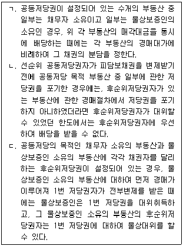
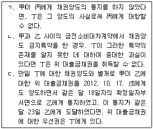
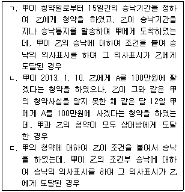
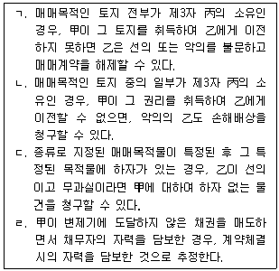

변리사-1차(2교시) (2013-02-23 기출문제)
1. X건물을 소유하고 있던 甲은 오지탐험을 떠난 후 장기간 연락이 두절되었다. 그 후 배우자 乙의 청구로 가정법원은 丙을 甲의 재산관리인으로 선임하였다. 다음 중 옳지 않은 것은? (다툼이 있는 경우에는 판례에 의함)
- 甲이 살아 돌아오더라도 그 이전에 丙이 법원의 허가를 받아 한 재판상 화해는 유효하다.
- 丙이 법원의 허가 없이 X건물을 처분하였어도 그 후 법원의 추인이 있으면 그 처분행위는 유효하게 된다.
- 丙이 법원의 허가를 받아 적법하게 X건물을 처분하였다면, 그 후 甲에게 실종선고가 내려져 그 처분행위가 있기 이전에 甲이 사망한 것으로 간주된 때에도 그 처분행위는 유효하다.
- 甲의 형제로서 현재 제2순위 상속인에 불과한 자는 甲의 실종선고를 청구할 수 없다.
- 丙이 법원으로부터 X건물의 매매를 허락받았다면, 특별한 사정이 없는 한, 甲과 아무 관계가 없는 타인의 채무담보를 위해 그 건물에 저당권을 설정할 수 있다.
(정답률: 알수없음)

2. 통정허위표시에 따라 형성된 법률관계를 기초로 하여 새로운 법률상의 이해관계를 가진 제3자에 해당하지 않는 자는? (다툼이 있는 경우에는 판례에 의함)
- 허위채무를 보증하고 그 보증채무를 이행한 보증인
- 가장매매의 매수인으로부터 소유권이전청구권 보전을 위한 가등기를 경료 받은 자
- 허위표시의 당사자로부터 계약상 지위를 이전받은 자
- 가장저당권에 기한 저당권의 실행에 의해 저당목적물을 경락ㆍ취득한 자
- 허위의 전세권설정계약에 기한 가장전세권 위에 저당권을 취득한 자
(정답률: 알수없음)
3. 종물에 관한 설명으로 옳은 것은? (다툼이 있는 경우에는 판례에 의함)
- 부동산은 종물이 될 수 없다.
- 저당권이 설정된 후에 저당목적물의 소유자가 저당목적물에 부속시킨 종물에도 그 저당권의 효력이 미친다.
- 주물 소유자의 사용을 돕고 있다면 주물 자체의 효용과 직접 관계가 없는 물건도 종물이다.
- 종물은 주물의 일부이거나 구성부분이어야 한다.
- 당사자는 주물을 처분할 때에 특약으로 종물을 제외할 수 없다.
(정답률: 알수없음)
4. 강행규정에 위반되어 무효인 경우는? (다툼이 있는 경우에는 판례에 의함)
- 지상권자에게 불리한 지상권양도금지특약
- 지명채권의 양도를 금지하는 특약
- 사단법인의 사원의 지위를 다른 사람에게 양도하기로 하는 특약
- 甲과 乙이 조합계약을 체결하면서 민법규정의 청산 절차를 거치지 않고 해산 시 조합재산을 乙의 단독소유로 한다는 甲과 乙 사이의 특약
- 임대차 종료 시 필요비를 상환하지 않기로 하는 임대인과 임차인 사이의 특약
(정답률: 알수없음)
5. 甲은 乙을 속여 그 소유의 시가 2억원 상당의 X토지를 1억 5천만원에 매수한 후 이전등기를 마쳤다. 그 후 甲은 丁에게 위 토지를 임대하다가 丙에게 시가보다 높은 2억 4천만원에 매도하고 소유권이전등기를 경료하였다. 이에 관한 설명으로 옳지 않은 것은? (다툼이 있는 경우에는 판례에 의함)
- 乙이 사기를 이유로 매매계약을 취소한 경우, 乙은 악의의 丙에 대하여 X토지의 반환을 청구할 수 있다.
- 乙이 사기를 이유로 매매계약을 취소한 후 甲 명의의 등기를 말소하지 않던 중에 선의의 丙이 X토지를 매수한 경우, 丙은 그 토지에 대한 소유권을 취득할 수 있다.
- 乙이 사기를 이유로 매매계약을 취소한 경우, 乙은 선의의 丙을 상대로 부당이득반환청구권을 행사할 수 없다.
- 甲이 乙의 궁박ㆍ경솔ㆍ무경험을 이용하려는 악의가 없었다면, 乙은 甲과의 매매계약이 폭리행위임을 이유로 무효를 주장할 수 없다.
- 乙이 사기를 이유로 매매계약을 취소한 경우, 甲을 상대로 하여 임대수익 및 전매차익 전부의 반환을 청구할 수 있다.
(정답률: 알수없음)
6. 표현대리에 관한 설명으로 옳은 것은? (다툼이 있는 경우에는 판례에 의함)
- 기본대리권 없는 자가 자신이 본인인 것처럼 가장하여 본인 명의로 법률행위를 한 경우에는 특별한 사정이 없는 한, 권한을 넘은 표현대리가 성립하지 않는다.
- 표현대리가 성립하는 경우, 상대방에게 과실이 있으면 과실상계의 법리를 유추적용하여 본인의 책임을 경감할 수 있다.
- 대리권수여의 표시에 의한 표현대리에 해당하여 대리행위의 효과가 본인에게 귀속하기 위해서는 대리행위의 상대방의 선의 이외에 무과실까지 요하는 것은 아니다.
- 권한을 넘은 표현대리 규정은 법정대리에는 그 적용이 없다.
- 등기신청의 대리권을 수여받은 자가 그 권한을 유월하여 대물변제라는 사법행위를 한 경우에는 권한을 넘은 표현대리가 성립하지 않는다.
(정답률: 알수없음)
7. 시효이익의 포기에 관한 설명으로 옳지 않은 것은? (다툼이 있는 경우에는 판례에 의함)
- 소멸시효의 이익은 미리 포기하지 못하지만, 소멸시효가 완성된 후에는 자유롭게 포기할 수 있다.
- 근저당권부 피담보채권에 대한 소멸시효가 완성된 후의 시효이익의 포기의 효력은 저당부동산의 제3취득자에게도 미친다.
- 소멸시효기간을 단축하는 약정은 특별한 사정이 없는 한 유효하다.
- 소멸시효 이익 포기의 의사표시를 할 수 있는 자는 시효완성의 이익을 받을 당사자 또는 그 대리인에 한정된다.
- 취득시효이익의 포기는 특별한 사정이 없는 한, 원인무효인 등기의 등기부상소유자가 아니라 취득시효 완성 당시의 진정한 소유자에 대하여 하여야 한다.
(정답률: 알수없음)
8. 권리능력 없는 사단에 관한 설명으로 옳지 않은 것은? (다툼이 있는 경우에는 판례에 의함)
- 권리능력 없는 사단에게도 소송상 당사자능력 및 등기능력이 인정될 수 있다.
- 권리능력 없는 사단의 대표자가 정관을 위반하여 사원총회의 결의를 거치지 않고 거래행위를 한 경우, 그 거래 상대방이 대표권제한 사실을 알았거나 알 수 있었던 경우가 아니라면 그 거래행위는 유효하다.
- 권리능력 없는 사단인 종중 소유의 재산에 대한 보존행위로서 소송을 하는 경우, 특별한 사정이 없는 한 총회의 결의를 거쳐야 하는 것은 아니다.
- 권리능력 없는 사단의 구성원들이 2개의 사단으로 나뉘어 각각 독립한 사단으로 존속하면서 종전 사단에게 귀속되었던 재산을 소유하는 방식의 분열은 인정되지 않는다.
- 권리능력 없는 사단의 구성원 중 일부가 탈퇴하여 새로운 권리능력 없는 사단을 설립한 경우, 종전의 사단 구성원들이 총유의 형태로 소유하고 있는 재산을 새로이 설립된 사단의 구성원들에게 양도하는 것은 허용된다.
(정답률: 알수없음)
9. 의사표시의 효력발생에 관한 설명으로 옳은 것은? (다툼이 있는 경우에는 판례에 의함)
- 격지자 사이의 해제권 행사의 의사표시는 발신한 때에 그 효력이 발생한다.
- 상대방 있는 단독행위의 경우에는 의사표시가 상대방에게 도달하더라도 표의자는 여전히 그 의사표시를 철회할 수 있다.
- 표의자가 의사표시를 발신한 후 그 도달 전에 사망한 경우, 그 의사표시는 효력을 상실한다.
- 행위무능력자에 대하여 의사표시를 한 경우, 표의자는 법정대리인이 그 도달사실을 알았더라도 그 의사표시로써 무능력자에게 대항할 수 없다.
- 채권양도의 통지가 채무자의 주소ㆍ거소ㆍ영업소 또는 사무소 등에 해당하지 아니하는 장소에서 이루어진 경우라도 그 효력이 발생할 수 있다.
(정답률: 알수없음)
10. 임의대리권의 범위에 관한 설명으로 옳지 않은 것은? (다툼이 있는 경우에는 판례에 의함)
- 토지매각의 대리권을 수여받은 대리인은 특별한 사정이 없는 한, 중도금이나 잔금을 수령하고 소유권등기를 이전할 권한을 가진다.
- 매매계약의 체결에 대한 포괄적 대리권을 수여받은 자는 특별한 사정이 없는 한, 상대방에게 약정된 매매대금의 지급기일을 연장하여 줄 권한을 가진다.
- 대여금의 영수권한만을 위임받은 대리인이 그 대여금채무의 일부를 면제하기 위해서는 본인의 특별수권이 필요하다.
- 본인을 대리하여 금전소비대차 내지 그를 위한 담보권설정계약을 체결할 권한을 수여받은 대리인은 특별한 사정이 없는 한, 본래의 계약관계를 해제할 대리권을 가진다.
- 예금계약의 체결을 위임받은 자가 가지는 대리권에는 그 예금을 담보로 하여 대출을 받거나 이를 처분할 수 있는 대리권이 당연히 포함되어 있는 것은 아니다.
(정답률: 알수없음)
11. 법률행위의 취소에 관한 설명으로 옳지 않은 것은? (다툼이 있는 경우에는 판례에 의함)
- 취소할 수 있는 법률행위를 추인하면 이를 다시 취소할 수 없다.
- 법률행위를 취소한 이후에는 무효행위의 추인의 요건에 따라 다시 추인할 수 없다.
- 매매계약의 체결 시 토지의 일정부분을 매매의 대상에서 제외시키는 특약을 한 경우, 그 특약만을 기망에 의한 법률행위로서 취소할 수는 없다.
- 수탁보증인이 보증계약을 취소할 때에는 채권자를 상대방으로 하여 의사표시를 하여야 한다.
- 하나의 법률행위가 가분성이 있거나 또는 그 목적물의 일부를 특정할 수 있는 경우, 나머지 부분이라도 유지하려는 당사자의 가정적 의사가 인정된다면 그 일부만을 취소할 수 있다.
(정답률: 알수없음)
12. 소멸시효의 중단사유에 관한 설명으로 옳은 것은? (다툼이 있는 경우에는 판례에 의함)
- 채권양도 후 대항요건이 구비되기 전에 양도인은 채무자를 상대로 시효중단의 효력이 있는 재판상 청구를 할 수 없다.
- 채권양도 후 대항요건이 구비되기 전에 양수인은 채무자를 상대로 시효중단의 효력이 있는 재판상 청구를 할 수 없다.
- 채권자가 가분채권의 일부분을 피보전채권으로 하여 가압류를 한 경우에는 피보전채권에 포함되지 않은 나머지 채권에 대하여도 시효중단의 효력이 생긴다.
- 시효완성 전에 한 면책적 채무인수는 소멸시효의 중단사유가 되지 않는다.
- 시효중단의 효력이 있는 승인에는 상대방의 권리에 관한 처분의 능력이나 권한이 있음을 요하지 않는다.
(정답률: 알수없음)
13. 질권자가 질권설정자의 승낙 없이 전질을 하는 경우에 관한 설명으로 옳지 않은 것은?
- 질권자가 채무자에게 전질의 사실을 통지하거나 채무자가 이를 승낙하지 않으면 전질로써 채무자에게 대항하지 못한다.
- 전질이 대항요건을 갖춘 경우에도 채무자는 전질권자의 동의 없이 원질권자에게 변제하고 전질권자에 대하여 질물의 반환을 청구할 수 있다.
- 전질권설정자는 전질을 하지 않았더라면 면할 수 있었을 불가항력으로 인한 손해에 대해서도 책임을 진다.
- 원질권과 전질권의 피담보채권이 모두 변제기에 있으면 전질권자는 직접 원질권을 실행하여 자기 채권을 우선변제 받을 권리가 있다.
- 전질권의 존속기간이 원질권의 존속기간을 초과하고 있다면 전질권은 원질권의 존속기간의 범위 내에서만 유효하다.
(정답률: 알수없음)
14. 가등기담보 등에 관한 법률에 관한 설명으로 옳지 않은 것은?
- 채무자가 청산기간이 지나기 전에 한 청산금에 관한 권리의 양도나 그 밖의 처분은 이로써 후순위권리자에게 대항하지 못한다.
- 담보가등기를 마친 부동산에 강제경매의 개시 결정이 있는 경우에 그 경매의 신청이 청산금을 지급하기 전에 행하여진 경우(청산금이 없는 경우에는 청산기간이 지나기 전)에는 담보가등기권리자는 그 가등기에 따라 본등기를 청구할 수 있다.
- 채무자 등은 특별한 사정이 없는 한 청산금채권을 변제받을 때까지 그 채무액을 채권자에게 지급하고 그 채권담보의 목적으로 마친 소유권이전등기의 말소를 청구할 수 있다.
- 담보가등기를 마친 부동산에 강제경매 등이 개시된 경우에 담보가등기권리자는 다른 채권자보다 자기채권을 우선변제 받을 권리가 있다.
- 담보가등기권리자가 담보목적 부동산의 소유권을 취득하기 위하여 청산금의 평가액을 통지하는 경우, 청산금이 없다고 인정되더라도 그 뜻을 통지하여야 한다.
(정답률: 알수없음)
15. 집합물에 대한 양도담보권설정계약에 관한 설명으로 옳지 않은 것은？ (다툼이 있는 경우에는 판례에 의함)
- 점유개정의 방법으로 동산에 대한 이중의 양도담보설정계약이 체결된 경우, 나중에 설정계약을 체결한 채권자는 양도담보권을 취득할 수 없다.
- 재고상품을 종류, 장소 또는 수량지정 등의 방법에 의하여 특정할 수 있으면, 그 집합물 전체에 대한 하나의 담보권을 설정할 수 있다.
- 대량으로 생산ㆍ출하가 반복되는 특정 돈사의 돼지들을 양도담보의 목적물로 삼은 경우, 그 돼지들을 출하하여 얻은 수익으로 새로 구입한 돼지에 대하여는 양도담보권이 미치지 않는다.
- 유동집합물에 대한 양도담보계약의 목적물을 선의취득하지 못한 양수인이 그 목적물에 자기 소유인 동종의 물건을 섞어 관리한 경우, 양도담보의 효력이 미치지 않는 물건의 존재와 범위에 대한 증명책임은 양수인에게 있다.
- 대량으로 생산ㆍ출하가 반복되는 특정 돈사의 돼지들을 양도담보의 목적물로 삼은 경우, 그 돼지로부터 출산시켜 얻은 새끼 돼지에 대해서는 별도의 양도담보권설정계약을 맺지 않더라도 양도담보권의 효력이 미친다.
(정답률: 알수없음)
16. 법정지상권이 인정되는 경우는? (다툼이 있는 경우에는 판례에 의함)
- 甲이 자신의 소유인 나대지에 대하여 乙에게 저당권을 설정해 준 후 乙의 승낙을 얻어 건물을 신축하였으나 乙의 저당권 실행으로 인하여 대지가 丙에게 경락된 경우
- 乙이 甲으로부터 미등기건물을 대지와 함께 매수하였으나 대지에 관하여만 소유권이전등기를 넘겨받고 대지에 대해서 저당권을 설정한 후 그 저당권이 실행되어 丙이 경락받은 경우
- 乙이 甲으로부터 토지를 매수하여 소유권이전등기를 한 후 乙이 건물을 신축하였으나 토지매매가 무효가 된 경우
- 甲과 乙이 1필지의 대지를 구분소유적으로 공유하던 중, 甲이 자기 몫으로 점유하던 특정 부분에 건물을 신축하여 자신의 이름으로 등기하였으나, 乙이 강제경매로 대지에 관한 甲의 지분을 모두 취득한 경우
- 甲, 乙, 丙이 같은 지분으로 공유하고 있는 대지 위에 甲이 乙의 동의를 얻어 건물을 신축한 후 丙이 공유물분할을 위한 경매에서 대지 전부의 소유권을 취득한 경우
(정답률: 알수없음)
17. 공동저당에 관한 설명으로 옳은 것을 모두 고른 것은? (다툼이 있는 경우에는 판례에 의함)

- ㄱ
- ㄴ
- ㄷ
- ㄱ, ㄷ
- ㄴ, ㄷ
(정답률: 알수없음)
18. 甲은 자신 소유의 건물에 대하여 乙과 전세권설정계약을 체결하고 乙 명의로 전세권등기를 해 주었다. 다른 특약이 없는 한, 乙에게 인정되지 않는 권리는?
- 건물에 대한 사용수익권
- 통상의 필요비에 대한 상환청구권
- 전세금반환을 목적으로 한 우선변제권
- 전세금반환을 목적으로 한 건물에 대한 경매청구권
- 甲의 동의를 얻어 부속시킨 부속물의 매수청구권
(정답률: 알수없음)
19. 甲은 1971. 1. 소유자 A로부터 X토지를 매수하여 미등기인 상태로 인도받아 2012. 3. 현재까지 점유ㆍ사용하고 있다. 한편, X토지에 대하여는 1992. 2. B 명의로, 1998. 3. C 명의로, 1998. 4. 乙 명의로 각 소유권이전등기가 순차로 경료되었다. 다음 중 옳은 것은? (다툼이 있는 경우에는 판례에 의함)
- 1971. 1. 개시된 점유로 甲이 시효취득한 소유권이전등기청구권은 채권적 청구권으로서 10년의 소멸시효에 걸려 소멸하였다.
- BㆍC의 X토지에 대한 소유권취득은 甲의 취득시효의 완성사실에 대하여 선의ㆍ무과실인 경우에 한하여 유효하다.
- 1971. 1. 개시된 점유로 인한 취득시효의 완성 후 다시 20년이 경과하였지만, 그 기간 중 X토지에 대한 소유권이 순차로 이전되었으므로, 甲은 乙을 상대로 하여 새로운 취득시효의 완성을 주장할 수 없다.
- 甲이 1971. 1. 개시된 점유로 인한 취득시효가 완성되어 A를 상대로 취득시효를 원인으로 하는 소유권이전등기를 청구한 사실이 있는 경우, B 명의로 소유권을 이전한 A에 대하여 1992. 2. 대상청구권을 행사할 수 있었다.
- 점유취득시효가 완성되었다 하더라도 그 후 甲이 X토지에 대한 점유를 상실하였다면, 甲의 乙에 대한 소유권이전등기청구권은 그 점유상실을 원인으로 하여 소멸한다.
(정답률: 알수없음)
20. 유치권에 관한 설명으로 옳지 않은 것은? (다툼이 있는 경우에는 판례에 의함)
- 건물신축공사 수급인인 乙과의 계약으로 자재를 납품한 甲은 그 자재가 사용되어 건물이 완공된 경우, 자재대금 미지급을 이유로 그 건물에 대한 유치권을 행사할 수 있다.
- 채무자 乙 소유의 물건으로부터 발생한 채권을 가진 甲이 乙을 직접점유자로 하여 그 물건을 간접점유하는 경우, 甲에게는 유치권이 성립하지 않는다.
- 부동산 매도인 甲이 매매대금의 일부를 지급받지 못한 상태에서 매수인 乙에게 소유권이전등기를 마쳐주었으나 부동산을 계속 점유하고 있는 경우, 甲은 그 대금채권을 피담보채권으로 하여 乙로부터 부동산 소유권을 취득한 제3자를 상대로 유치권을 주장할 수 없다.
- 유치권이 인정되는 아파트를 경락ㆍ취득한 甲이 유치권자에 대한 임료 상당의 부당이득금 반환채권을 자동채권으로 하고 유치권자의 종전 소유자 乙에 대한 유익비상환채권을 수동채권으로 하여 상계의 의사표시를 하였더라도, 그 상계는 허용되지 않는다.
- 유치권을 행사하는 甲이 스스로 유치물인 주택에 거주하더라도 이는 유치물의 보존에 필요한 사용에 해당하지만, 甲은 차임 상당의 이득을 유치물의 소유자에게 반환할 의무가 있다.
(정답률: 알수없음)
21. 甲과 乙 두 사람은 X토지를 공유하고 있다(등기된 지분은 각 1/2, 실제의 지분은 甲 3/5, 乙 2/5임). 甲은 乙과 상의 없이 X토지 위에 건물을 신축하여 점유ㆍ사용하고 있다. 다음 설명 중 옳지 않은 것은? (다툼이 있는 경우에는 판례에 의함)
- 乙은 甲을 상대로 X토지에 대한 자신의 등기부 상의 지분에 따라 공유물분할청구소송을 제기할 수 있다.
- 제3자가 X토지를 불법점유하고 있는 경우, 乙은 X토지의 반환을 청구할 수 있다.
- 乙은 甲을 상대로 하여 건물의 철거를 청구할 수 있다.
- 乙은 甲을 상대로 자신의 지분의 비율로 X토지에 관한 임료 상당의 부당이득반환을 청구할 수 있다.
- 甲의 건물신축행위는 토지에 대한 관리행위가 아니므로 甲은 乙의 동의 없이 건물을 신축할 권한이 없다. 민법개론 A형 20-11-[2교시]
(정답률: 알수없음)
22. 甲은 X토지의 소유자인 丙과 매매계약을 체결하고 그 대금을 지급한 후, 소유권이전등기는 자신과 명의신탁약정을 한 친구 乙에게 이전해 줄 것을 요청하여 乙앞으로 그 등기가 경료되었다. 다음 중 옳지 않은 것은? (다툼이 있는 경우에는 판례에 의함)
- 乙에게로의 이전등기에도 불구하고 甲은 丙에 대하여 소유권이전등기청구권을 상실하지 않는다.
- 甲은 丙을 대위하여 乙 명의의 소유권이전등기의 말소를 청구할 수 있다.
- 甲은 직접 乙을 상대로 하여 부당이득을 원인으로 하는 소유권이전등기를 청구할 수 없다.
- 乙은 丙이 甲에게 매매대금을 반환할 때까지 丙의 소유권이전등기 말소청구에 응하지 않을 수 있다.
- 乙이 甲의 소유권 이전등기청구에 응하여 자의로 X토지의 소유권이전등기를 하여 주었다면, 그 이전등기는 실체관계에 부합하므로 유효하다.
(정답률: 알수없음)
23. 甲은 丙에 대한 채무를 담보하기 위하여 자신 소유의 X토지에 丙 명의로 근저당권을 설정해 주었다. 그 후 甲은 X토지를 乙에게 매도하여 소유권이전등기를 해 주었다. 다음 중 옳지 않은 것은? (다툼이 있는 경우에는 판례에 의함)
- 甲이 위 근저당권에 의해 담보된 채무를 모두 변제한 경우, 乙은 丙을 상대로 하여 피담보채무의 소멸을 원인으로 그 근저당권설정등기의 말소를 청구할 수 있다.
- 甲은 원본뿐만 아니라 이자, 위약금, 채무불이행으로 인한 손해배상도 모두 변제하여야 근저당권설정등기의 말소를 청구할 수 있다.
- 甲이 위 근저당권에 의해 담보된 채무를 모두 변제한 경우, 甲은 丙을 상대로 피담보채무의 소멸을 원인으로 하여 그 근저당권설정등기의 말소를 청구할 수 있다.
- 乙은 甲의 의사에 반하더라도 피담보채무를 변제하여 근저당권을 소멸시킬 수 있다.
- 乙은 甲의 채무가 채권최고액을 초과하는 경우, 채무 전액을 변제하지 않으면 근저당권설정등기의 말소를 청구할 수 없다.
(정답률: 알수없음)
24. 등기의 추정력에 관한 설명으로 옳지 않은 것은? (다툼이 있는 경우에는 판례에 의함)
- 부동산소유권보존등기가 경료된 이상 그 보존등기 명의자에게 소유권이 있다고 추정되므로 다른 사람이 건물을 신축한 사실이 드러나더라도 추정력은 깨어지지 않는다.
- 소유권이전등기가 원인 없이 말소된 경우에는 그 회복등기가 경료되기 전이라고 하더라도 말소된 등기의 등기명의인은 적법한 권리자로 추정된다.
- 환매기간을 제한하는 환매특약이 등기부에 기재되어 있는 때에는 등기부 기재와 같은 환매특약이 진정하게 성립하는 것으로 추정된다.
- 소유권이전청구권 보전을 위한 가등기가 있다고 하여, 소유권이전등기를 청구할 어떤 법률관계가 있다고 추정되지 않는다.
- 소유권이전등기가 경료된 경우, 그 등기명의인은 전 소유자에 대해서도 적법한 등기원인에 의해 소유권을 취득한 것으로 추정된다.
(정답률: 알수없음)
25. 이행보조자의 책임에 관한 설명 중 옳지 않은 것은? (다툼이 있는 경우에는 판례에 의함)
- 채무자로부터 지시 또는 감독을 받는 관계에 있지 않은 자도 이행보조자가 될 수 있다.
- 채무자의 묵시적 동의하에 이행보조자가 채무의 이행을 위하여 제3자를 복이행보조자로 사용하는 경우, 복이행보조자의 고의ㆍ과실에 관하여도 채무자가 그 책임을 진다.
- 채무의 성질상 반드시 변제자 본인의 행위에 의해서만 가능한 것이 아닌 이상, 제3자를 이행보조자로 사용하여 변제할 수 있다.
- 채무자가 이행보조자의 선임ㆍ감독에 상당한 주의를 다하였음을 증명한 경우, 채무자는 이행보조자의 과책에 대하여 그 책임을 면한다.
- 이행보조자의 행위가 채무이행과 객관적ㆍ외형적으로 관련이 있으면 그 행위가 채권자에 대한 불법행위가 된다고 하더라도 채무자는 면책될 수 없다.
(정답률: 알수없음)
26. 법정해제권에 관한 설명으로 옳지 않은 것은? (다툼이 있는 경우에는 판례에 의함)
- 매도인이 미리 계약을 이행하지 아니할 의사를 명백히 표시한 경우, 매수인은 자기채무의 이행제공 없이 계약을 해제할 수 있다.
- 채무이행의 최고액이 본래 이행할 채무액보다 현저히 과다하고, 채권자가 최고한 금액을 제공하지 않으면 수령을 거절할 것이 명백한 경우에도, 그 최고는 해제권행사의 요건인 최고로서의 효력이 있다.
- 일방 당사자의 계약위반을 이유로 상대방이 계약을 해제하였다면, 특별한 사정이 없는 한, 계약을 위반한 당사자도 계약해제의 효과를 주장할 수 있다.
- 목적물이 타인에게 양도되어 전세권설정등기의 이행이 불능이 된 경우, 전세계약을 해제하기 위해서는 전세금의 이행제공을 요하지 않는다.
- 계약의 목적달성과 관련이 없는 부수적 채무의 위반만을 이유로 한 해제권의 행사는 허용되지 않는다.
(정답률: 알수없음)
27. 손해배상액의 예정에 관한 설명으로 옳은 것은? (다툼이 있는 경우에는 판례에 의함)
- 법원은 손해배상의 예정액이 부당하게 과다한지의 여부를 판단함에 있어서 실제손해액을 구체적으로 심리ㆍ확정하여야 한다.
- 일방 당사자의 귀책사유로 계약이 해제된 경우에 관해서만 위약금 약정을 둔 경우, 그 상대방의 귀책사유로 계약이 해제되는 경우에도 당연히 위약금 지급의무가 인정된다.
- 계약 당시 손해배상액을 예정한 경우, 다른 특약이 없는 한, 채무불이행으로 인하여 채권자가 입은 통상손해와 특별손해까지 예정액에 포함되고, 예정액을 초과하는 부분을 별도로 청구할 수는 없다.
- 채무자는 특약이 없는 한, 자신에게 귀책사유가 없음을 증명하더라도 예정배상액의 지급책임을 면할 수 없다.
- 법원은 채무불이행시를 기준으로 그 사이에 발생한 여러 사정을 종합적으로 고려하여 손해배상의 예정액이 부당하게 과다한지의 여부 및 그에 대한 적당한 감액의 범위를 판단하여야 한다.
(정답률: 알수없음)
28. 甲에 대하여 금전채무를 부담하고 있는 乙은 그 채무를 이행하지 않을 목적으로 丙과 공모하여 그의 유일한 재산인 X토지를 丙에게 매도한 후 소유권이전등기를 마쳐주었다. 甲이 채권자취소소송을 제기한 경우에 관한 설명으로 옳은 것은? (다툼이 있는 경우에는 판례에 의함)
- 甲은 X토지의 등기를 乙에게 회복시키기 위하여 丙을 상대로 乙 앞으로 직접소유권이전등기절차의 이행을 청구할 수 없다.
- 甲이 원상회복을 구하고 있으면 법원은 가액배상을 명할 수 없다.
- 丙이 취득한 X토지를 제3자인 丁에게 임대한 경우, 丙이 丁으로부터 받은 임대료 상당액은 원상회복의 대상이 되지 않는다.
- 원상회복이 가액배상의 방법으로 이루어지는 경우, 甲이 보전하고자 하는 채권액에는 乙과 丙 사이의 매매계약 이후 사실심 변론종결 시까지 발생한 이자나 지연손해금은 포함되지 않는다.
- 甲의 청구가 인용되면 乙ㆍ丙 사이의 법률관계는 소급적으로 소멸한다.
(정답률: 알수없음)
29. 甲은 2012. 5. 20. 2억원을 乙에게 1년간 대출해 주면서 이를 담보하기 위하여 丙과 보증계약을 체결하였다. 그런데 2012. 10. 15. 甲은 乙에 대한 위 대출금채권을 丁에게 양도하고 같은 달 17일을 확정일자로 하여 乙에게 서면으로 양도통지를 하였으며, 이 통지는 같은 달 25일 乙에게 도달하였다. 다음 중 옳은 것을 모두 고른 것은? (다툼이 있는 경우에는 판례에 의함)

- ㄱ
- ㄴ
- ㄱ, ㄷ
- ㄴ, ㄷ
- ㄱ, ㄴ, ㄷ
(정답률: 알수없음)
30. 乙이 丙으로부터 금전을 차용하면서 자신 소유의 X토지에 대하여 저당권을 설정해 주었고, 甲은 이를 연대보증하였다. 그 후 甲이 丙에게 채무를 변제하고자 하는 경우에 관한 설명으로 옳지 않은 것은? (다툼이 있는 경우에는 판례에 의함)
- 甲이 변제한 경우, 甲은 丙의 승낙이 없더라도 당연히 丙을 대위할 수 있다.
- 甲이 채무의 일부만을 변제하는 경우, 甲은 변제한 가액에 비례하여 丙과 함께 乙에 대한 권리를 행사하게 된다.
- 甲이 일부만을 변제한 후 乙이 잔존채무를 이행하지 아니하여 X토지가 경매된 경우, 甲과 丙은 동순위로 배당을 받는다.
- 甲의 변제 후 乙이 X토지를 丁에게 매도한 경우, 甲이 미리 저당권등기에 대위의 부기등기를 하면 丁에 대하여 채권자 丙을 대위할 수 있다.
- 丙이 고의로 X토지에 대한 저당권을 말소한 경우, 특단의 사정이 없는 한 甲은 그 말소로 인하여 상환 받을 수 없는 한도에서 면책을 주장할 수 있다.
(정답률: 알수없음)
31. 이행불능에 관한 설명으로 옳지 않은 것은? (다툼이 있는 경우에는 판례에 의함)
- 토지의 진정소유자 甲이 무효인 등기의 명의인 乙을 상대로 물권적 청구권을 행사하여 그 토지에 관하여 등기말소를 청구하였으나 제3자의 시효취득으로 인하여 등기말소의무가 이행불능이 된 경우, 甲은 乙을 상대로 전보배상을 청구할 수 있다.
- 매매목적 부동산이 이중으로 양도되어 제2매수인 앞으로 소유권이전등기가 경료되면 특별한 사정이 없는 한, 제1매수인은 매도인에 대하여 전보배상을 청구할 수 있다.
- 매도인 甲의 매매목적물에 관한 소유권이전의무가 매수인 乙의 귀책사유로 이행불능이 된 경우에는 乙은 그 이행불능을 이유로 계약을 해제할 수 없다.
- 이행불능의 효과로는 전보배상청구권, 계약해제권, 대상청구권이 인정될 수 있다.
- 매매목적 부동산에 관하여 제3자의 처분금지가처분의 등기가 기입되었다는 사정만으로 이행불능이 되는 것은 아니다. 민법개론 A형 20-16-[2교시]
(정답률: 알수없음)
32. 다수당사자의 채권관계에서 채무자 1인에게 생긴 사유가 다른 채무자에 대하여 절대적 효력을 가지지 않는 경우는? (다툼이 있는 경우에는 판례에 의함)
- 연대채무자 1인에 대한 압류로 인하여 시효가 중단된 경우
- 부진정연대채무자 1인이 자신의 채권자에 대한 반대채권으로 상계를 한 경우
- 연대채무자 1인과 채권자 사이에 채무의 경개가 이루어진 경우
- 채권자가 연대채무자 1인에 대하여 이행의 청구를 한 경우
- 불가분채무자 1인이 채무를 이행하였으나, 채권자가 그 수령을 거절한 경우
(정답률: 알수없음)
33. 채권자대위권에 관한 설명으로 옳지 않은 것은? (다툼이 있는 경우에는 판례에 의함)
- 채무자의 적극재산인 부동산에 이미 제3자 명의로 소유권이전등기청구권 보전의 가등기가 경료되어 있는 경우, 특별한 사정이 없는 한 그 부동산은 적극재산을 산정할 때 제외하여야 한다.
- 취득시효완성 후 제3자 앞으로 경료된 소유권이전등기가 원인무효인 경우, 취득시효완성으로 인한 소유권이전등기청구권을 가진 자는 취득시효완성 당시의 소유자를 대위하여 제3자 명의의 등기말소를 청구할 수 있다.
- 채권자대위권의 행사가 통지된 후에 채무자의 채무불이행을 이유로 제3채무자가 채무자와의 계약을 해제하더라도, 원칙적으로 제3채무자는 이로써 대위채권자에게 대항할 수 없다.
- 채권자대위소송의 제3채무자는 원칙적으로 채무자가 채권자에 대하여 가지는 항변으로써 대위채권자에게 대항할 수 없다.
- 채권자대위소송에서 채권자의 채무자에 대한 피보전권리의 존재 여부는 법원의 직권조사사항이다.
(정답률: 알수없음)
34. 甲과 乙 사이에 계약이 성립한 경우를 모두 고른 것은?

- ㄴ
- ㄷ
- ㄱ, ㄷ
- ㄴ, ㄷ
- ㄱ, ㄴ, ㄷ
(정답률: 알수없음)
35. 동시이행의 항변권에 관한 설명으로 옳은 것은? (다툼이 있는 경우에는 판례에 의함)
- 당사자 쌍방이 각각 별개의 약정으로 상대방에 대하여 채무를 지게 된 경우, 특약이 없더라도 상대방이 자기에게 이행할 채무가 있다는 점을 들어 동시이행의 항변권을 행사할 수 있다.
- 쌍무계약에서 선이행의무자가 선이행하여야 할 채무를 이행하지 않은 상태에서 상대방의 채무가 이행기에 도달한 경우, 선이행의무자는 동시이행의 항변권을 행사할 수 없다.
- 당사자 일방의 이행제공이 계속되지 않더라도 이미 과거에 유효한 이행의 제공이 있었던 경우, 상대방은 더 이상 동시이행의 항변권을 행사할 수 없다.
- 동시이행의 항변권이 있는 채무의 이행기가 도래한 경우, 그 채무자는 반대채무의 이행의 제공이 없는 한 동시이행의 항변권을 행사하지 않더라도 지체책임을 지지 않는다.
- 쌍무계약이 무효로 되어 각 당사자가 그 이행으로 취득한 것을 서로 반환하여야 하는 경우, 각 당사자의 반환의무는 동시이행의 관계에 있지 않다.
(정답률: 알수없음)
36. 甲은 자신이 소유하는 건물을 乙에게 매각하면서 乙과 매매대금 중 잔금의 지급청구권을 甲의 대여금 채권자인 丙에게 귀속시키기로 약정하였다. 이에 관한 설명으로 옳은 것은? (다툼이 있는 경우에는 판례에 의함)
- 甲과 乙이 丙에게 잔금지급청구권을 귀속시키기로 하는 약정에 조건을 붙이는 것은 丙의 지위를 불안하게 하므로 원칙적으로 허용되지 않는다.
- 甲ㆍ乙 사이의 매매계약이 해제되면, 특별한 사정이 없는 한, 乙은 계약해제 등에 기한 원상회복을 원인으로 丙에게 이미 지급한 잔금의 반환을 청구할 수 있다.
- 丙에게 잔금을 지급하기로 한 약정이 체결된 이후, 甲ㆍ丙 사이의 금전소비대차계약이 취소되었다면 乙은 丙에 대하여 잔금의 지급을 거절할 수 있다.
- 丙이 수익의 의사표시를 하였더라도, 특별한 사정이 없는 한, 이후 甲과 乙이 잔금지급과 관련한 丙의 권리를 변경시키는 합의를 하였다면 그 합의는 丙에 대하여 효력이 있다.
- 乙이 丙에게 상당한 기간을 정하여 잔금에 대한 수익 여부를 최고하였으나 그 기간 내에 확답을 받지 못하였다면, 丙이 계약의 이익을 받기를 거절한 것으로 본다.
(정답률: 알수없음)
37. 매도인 甲과 매수인 乙 사이에 체결된 매매계약의 담보책임에 관한 설명으로 옳지 않은 것을 모두 고른 것은?

- ㄱ, ㄴ
- ㄱ, ㄷ
- ㄴ, ㄷ
- ㄴ, ㄹ
- ㄷ, ㄹ
(정답률: 알수없음)
38. 甲은 丙의 건물을 임차하여 乙에게 전대하였다. 이에 관한 설명으로 옳지 않은 것은? (다툼이 있는 경우에는 판례에 의함)
- 甲이 丙의 동의를 얻지 않고 전대하였다고 하더라도, 甲과 乙이 체결한 전대차계약은 甲ㆍ乙 사이에서는 유효하다.
- 甲이 丙의 동의를 얻어 전대한 경우에는, 이후 甲과 丙의 합의로 임대차계약을 해지하더라도 乙의 권리는 소멸하지 않는다.
- 임대차 기간 및 전대차 기간이 모두 만료된 후, 乙이 丙에게 건물을 직접 명도하면 乙은 甲에 대한 건물명도의무를 면한다.
- 甲의 채무불이행을 이유로 丙이 임대차계약을 해지하고 乙에게 목적물반환청구권을 행사한 경우, 특별한 사정이 없는 한, 乙은 甲에 대한 보증금반환채권으로 丙의 목적물반환청구에 대항할 수 없다.
- 乙이 丙의 동의를 얻어 甲으로부터 부속물을 매수하였더라도, 乙은 전대차 종료 시에 丙에게 그 부속물의 매수를 청구할 수 없다.
(정답률: 알수없음)
39. 도급인 甲과 수급인 乙은 2012. 5. 10.까지 건물 1동을 완성하기로 하는 계약을 체결하였다. 이에 관한 설명으로 옳은 것은? (다툼이 있는 경우에는 판례에 의함)
- 乙이 자신의 노력과 재료를 들여 건물을 완성한 경우, 甲의 명의로 건축허가를 받아 소유권보존등기를 하기로 하는 등 완성된 건물의 소유권을 甲에게 귀속시키기로 하는 합의가 있다고 하여, 위 건물의 소유권이 甲에게 원시적으로 귀속되는 것은 아니다.
- 乙의 하자보수에 갈음하는 손해배상채무는 이행의 기한이 없는 채무이므로, 그 에 대한 지체책임은 하자가 발생하여 보수가 필요하게 된 시점부터 발생한다.
- 甲이 기성고에 따라 공사대금을 분할하여 지급하기로 약정한 경우, 특별한 사정이 없는 한 하자보수의무와 동시이행의 관계에 있는 공사대금지급채무는 하자가 발생한 부분의 기성공사대금에 한정된다.
- 甲은 건물이 완공되지 않은 시점인 2012. 4. 10. 乙의 채무불이행이 없음에도 불구하고 손해를 배상하고 일방적으로 계약을 해제할 수 있다.
- 하자확대손해로 인한 乙의 손해배상채무는 원칙적으로 甲의 공사대금채무와 동시이행의 관계에 있지 않다.
(정답률: 알수없음)
40. 甲과 乙의 공동불법행위로 丙이 손해를 입은 경우에 관한 설명으로 옳지 않은 것은? (다툼이 있는 경우에는 판례에 의함)
- 甲이 乙에 대하여 구상권을 행사하기 위해서는 자기의 부담부분을 초과하여 丙에게 배상하여야 한다.
- 丙이 乙의 손해배상채무를 면제해 주었더라도, 甲이 丙에 대한 손해배상채무전액을 변제하였다면 乙에 대하여 구상권을 행사할 수 있다.
- 丙이 甲을 상대로 손해배상을 청구하더라도 丙의 乙에 대한 손해배상청구권은 소멸시효가 중단되지 않는다.
- 丙이 甲과 乙을 공동피고로 하여 손해배상을 청구하는 경우, 甲과 乙에 대한 丙의 과실비율이 서로 다르면 과실상계를 함에 있어서 원칙적으로 丙의 甲과 乙에 대한 과실을 각각 개별적으로 평가하여야 한다.
- 丙의 부주의를 이용하여 고의로 불법행위를 저지른 甲은 丙의 부주의를 이유로 자신의 책임을 경감하여 줄 것을 청구할 수 없다.
(정답률: 알수없음)